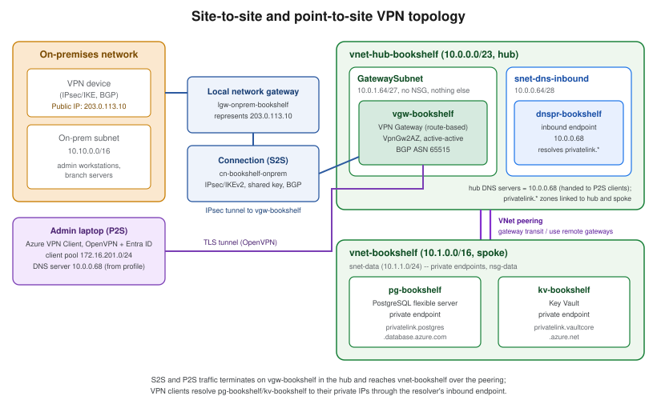

VPN Gateway and Hybrid Connectivity
|
This content was generated with the assistance of AI and should be verified against the official documentation before being relied on in production. |
Commands on this page are current for Azure CLI 2.90.0 (checked 2026-09-27); re-verify against az version and
the linked reference pages before relying on them in a pipeline. VPN Gateway SKUs changed recently — see
[Gateway SKUs] below — so double-check the SKU table against the live docs before picking one for a new
deployment.
Bookshelf’s engineers work from laptops that are never inside Azure, and one partner runs a small branch office
that needs always-on connectivity to the workload spoke, vnet-bookshelf. This page covers both problems with the
same gateway resource, vgw-bookshelf: a site-to-site (S2S) connection for the partner’s branch router, and a
point-to-site (P2S) connection, authenticated against Microsoft Entra ID, that lets an admin’s laptop reach
pg-bookshelf and kv-bookshelf over their private endpoints exactly as if it were on the VNet.
vgw-bookshelf lives in the hub of Bookshelf’s hub-spoke topology, not in the spoke: it is deployed into the
GatewaySubnet of vnet-hub-bookshelf, and vnet-bookshelf reaches it over VNet peering with gateway transit
enabled on the hub side and use remote gateways on the spoke side. The page assumes the topology, subnets,
private endpoints, private DNS zones and DNS Private Resolver built in Virtual Networks,
and the Microsoft Entra ID/RBAC background from Identity and Access.
VPN Gateway fundamentals
A VPN gateway is a specific kind of Azure virtual network gateway (Microsoft.Network/virtualNetworkGateways
with gatewayType: Vpn), deployed into a dedicated subnet of a VNet named exactly GatewaySubnet. That subnet
carries no NSG and hosts nothing else — Azure manages redundant gateway instances inside it directly, and
resizing it later means recreating the gateway. Every SKU except Basic needs a GatewaySubnet of /27 or
larger. Bookshelf’s is 10.0.1.64/27 in vnet-hub-bookshelf, created in Virtual Networks
alongside the hub’s firewall, Bastion and DNS resolver subnets; the spoke vnet-bookshelf has no
GatewaySubnet of its own and uses the hub’s gateway through peering.
Route-based vs. policy-based VPN
Every gateway is created as one of two VPN types:
-
Route-based (
RouteBased) — traffic selectors are wildcarded (0.0.0.0/0on both sides) and the actual routing decision is made by the VNet’s route table (static routes) or by BGP, independently of the IPsec policy. This is what every current gateway SKU supports, what P2S and multi-site topologies require, and the typevgw-bookshelfuses below. -
Policy-based (
PolicyBased, sometimes called "static routing") — IPsec security associations are defined per address-prefix pair, matching how many legacy on-premises VPN devices work. It is a legacy option, only available on theBasicSKU, that supports a single tunnel and neither BGP nor P2S. New designs should default to route-based and only fall back to policy-based when the on-premises device genuinely cannot do route-based IKEv2.
[[Gateway SKUs]] === Gateway SKUs
Azure is actively consolidating the VPN Gateway SKU list toward zone-redundant options. As of November 1,
2025, VpnGw1-VpnGw5 (the non-AZ SKUs) can no longer be used to create new gateways — only the AZ
variants (VpnGw1AZ-VpnGw5AZ) and Basic can. Existing non-AZ gateways keep working through a migration
window running from September 2025 to September 2026, after which Azure automatically migrates them to the
matching AZ SKU; there is no announced retirement date for the non-AZ SKU names themselves beyond that
migration, but they are no longer creatable and Azure recommends migrating proactively rather than waiting for
the automatic cutover.
| SKU family | Generation | Zone-redundant | Notes |
|---|---|---|---|
|
Generation1 only |
No |
Legacy, low-throughput (100 Mbps), no BGP, supports policy-based VPN; cannot be used with Microsoft Entra ID
P2S authentication or with ExpressRoute coexistence. |
|
Generation1 |
Yes |
The zone-redundant SKUs available for new deployments today at these performance points; |
|
Generation2 |
Yes |
Higher throughput (1.25-10 Gbps aggregate) and higher P2S connection ceilings than the Generation1 |
|
Generation1/2 |
No |
No longer creatable for new gateways since November 2025; being migrated automatically to the matching |
Generation1 vs. Generation2 is a separate axis from the AZ suffix: Generation2 SKUs offer higher aggregate
throughput and more P2S connections per SKU tier, and a gateway that still references a Basic public IP
address is retiring that public IP (not the gateway itself) on a schedule Azure has pushed back more than once — most recently to June 30, 2026 — after which a gateway still using a Basic IP stops working; migrating to
a Standard public IP (az network public-ip update --sku Standard, or the built-in migration tool) is required
regardless of SKU, and doing so for a VpnGw1-5 gateway also triggers its automatic upgrade to Generation2 as
part of the same operation, with no separate Generation migration step to run.
Active-active mode
By default a gateway is active-passive: one instance handles traffic, the other is a hot standby that takes over on failover (with a brief interruption). Active-active mode assigns a public IP to each of the gateway’s two instances and both actively pass traffic, which removes the failover interruption and, on an on-premises device that supports it, lets both tunnels be used concurrently for higher aggregate throughput. Active-active requires two public IP addresses at creation time and is recommended whenever the on-premises device (or a second on-premises device, in a dual-redundancy design) can dial both.
In the Azure portal
-
Search for Virtual network gateways and select Create.
-
Basics:
$RG, namevgw-bookshelf, regioneastus2, Gateway type: VPN, VPN type: Route-based, SKU:VpnGw2AZ, Generation: Generation2. -
Instance details: select
vnet-hub-bookshelf(itsGatewaySubnetmust already exist — see Virtual Networks); choose Active-active mode: Enabled and, for BGP, set an ASN under Configure BGP ASN if the default doesn’t fit the on-premises design. -
Public IP address: create new Standard SKU public IPs (one per active-active instance).
-
Review + create, then Create. The portal itself warns that this can take a while; see the provisioning-time note below before assuming the deployment has stalled.
With the Azure CLI
az network public-ip create \
--resource-group "$RG" \
--name pip-vgw-bookshelf-1 \
--sku Standard \
--allocation-method Static
az network public-ip create \
--resource-group "$RG" \
--name pip-vgw-bookshelf-2 \
--sku Standard \
--allocation-method Static
az network vnet-gateway create \
--resource-group "$RG" \
--name vgw-bookshelf \
--vnet vnet-hub-bookshelf \
--gateway-type Vpn \
--vpn-type RouteBased \
--sku VpnGw2AZ \
--vpn-gateway-generation Generation2 \
--public-ip-addresses pip-vgw-bookshelf-1 pip-vgw-bookshelf-2 \
--asn 65515 \
--no-waitDerived from Azure CLI reference — az network vnet-gateway create.
Creating (or resizing) a VPN gateway is one of the slowest provisioning operations in Azure: Microsoft’s own
guidance puts it at 45 minutes or more, depending on SKU and region, since the operation actually stands up
redundant gateway compute instances behind the scenes rather than a thin control-plane record. --no-wait above
returns immediately and leaves the CLI free for other commands; poll with az network vnet-gateway show
--resource-group "$RG" --name vgw-bookshelf --query provisioningState (or watch the portal’s own notification)
rather than assuming a hang, and plan any maintenance window or demo around that lead time rather than treating
gateway creation like an ordinary resource.
Once the gateway reports Succeeded, create (or update) the hub-spoke peering with --allow-gateway-transit on
the hub side and --use-remote-gateways on the spoke side, as shown in the peering section of
Virtual Networks; the spoke-side flag is rejected while the hub has no gateway yet. That
peering is what makes `vnet-bookshelf’s address space reachable from the S2S and P2S connections below.
Site-to-site VPN
A site-to-site (S2S) connection is an always-on IPsec/IKE tunnel between vgw-bookshelf and a device at a fixed
on-premises public IP address. Three resources cooperate:
- Local network gateway
-
(
Microsoft.Network/localNetworkGateways) An Azure object that represents the on-premises side — its public IP (or FQDN) and the address prefixes reachable behind it (or, with BGP enabled, its BGP peer IP and ASN instead of a static prefix list). It is not itself a gateway; it is a description of the far end that the connection resource points at. - Connection
-
(
Microsoft.Network/connectionswithconnectionType: IPsec) Tiesvgw-bookshelfto the local network gateway, carrying the pre-shared key (or, since a later API version, Microsoft Entra-issued certificates for IKEv2) and the IPsec/IKE policy. This is the resource whose status (Connected/Not connected) is what Troubleshooting below checks. - IPsec/IKE policy
-
An optional, explicit set of cipher suites, Diffie-Hellman groups, and SA lifetimes (
--ipsec-encryption,--ipsec-integrity,--ike-encryption,--ike-integrity,--dh-group,--pfs-dh-group,--sa-lifetime,--sa-max-size) applied to one connection. Left unset, the gateway negotiates from its own default policy list, which is compatible with most modern on-premises devices; a custom policy is needed only when the on-premises device is restricted to a specific, non-default combination. - BGP
-
Optional dynamic routing over the tunnel, letting both sides exchange reachable prefixes instead of requiring every subnet to be listed by hand on the local network gateway and the VNet’s own route propagation. BGP requires
VpnGw1AZor above (notBasic) and an ASN on both the gateway and the on-premises device;vgw-bookshelfis created with ASN65515above so BGP can be enabled per connection without recreating the gateway.
In the Azure portal
-
Search for Local network gateways → Create:
$RG, namelgw-onprem-bookshelf, IP address:203.0.113.10(the on-premises device’s public IP — an example, not a real address), Address space:10.10.0.0/16; enable Configure BGP settings if BGP is used, entering the on-premises ASN and peer IP. -
Open
vgw-bookshelf→ Connections → Add: Connection type: Site-to-site (IPsec); Local network gateway:lgw-onprem-bookshelf; Shared key (PSK): a strong generated value, communicated to the on-premises administrator out of band, never committed to source control; enable IKEv2 and, if wanted, a custom IPsec/IKE policy. -
OK, then wait for the connection status to read Connected (see Troubleshooting) once the on-premises device is configured to match.
With the Azure CLI
az network local-gateway create \
--resource-group "$RG" \
--name lgw-onprem-bookshelf \
--gateway-ip-address 203.0.113.10 \
--local-address-prefixes 10.10.0.0/16 \
--asn 65001 \
--bgp-peering-address 10.10.0.1
az network vpn-connection create \
--resource-group "$RG" \
--name cn-bookshelf-onprem \
--vnet-gateway1 vgw-bookshelf \
--local-gateway2 lgw-onprem-bookshelf \
--shared-key "<shared-key>" \
--enable-bgp true
# Optional: apply a custom IPsec/IKE policy to this connection only
az network vpn-connection ipsec-policy add \
--resource-group "$RG" \
--connection-name cn-bookshelf-onprem \
--ike-encryption AES256 \
--ike-integrity SHA384 \
--dh-group DHGroup24 \
--ipsec-encryption GCMAES256 \
--ipsec-integrity GCMAES256 \
--pfs-dh-group PFS24 \
--sa-lifetime 27000 \
--sa-max-size 102400000Derived from Azure CLI reference — az network local-gateway create, Azure CLI reference — az network vpn-connection create, and About VPN devices and IPsec/IKE parameters.

Point-to-site VPN
A point-to-site (P2S) connection lets an individual client machine — not a whole network — dial into
vgw-bookshelf over the public internet, without any on-premises hardware, and from there reach both the hub
and, through the peering, vnet-bookshelf. Bookshelf uses it so admins can
reach pg-bookshelf and kv-bookshelf from their laptops without either service ever exposing a public
endpoint.
Protocol and authentication
OpenVPN (SSL/TLS-based) is the protocol used throughout this section: it tunnels over TCP 443, which traverses almost every corporate firewall and proxy without extra configuration, and it is the protocol the current Azure VPN Client (Windows, macOS, Linux) speaks. SSTP and IKEv2 remain available P2S protocols on Windows-native or third-party IKEv2 clients respectively, but Microsoft Entra ID authentication — Bookshelf’s chosen method — requires OpenVPN.
Two authentication methods are available on a route-based (non-Basic) gateway:
- Microsoft Entra ID authentication
-
The client authenticates interactively against a Microsoft Entra tenant (the same tenant covered on Identity and Access) using OAuth 2.0, and the gateway trusts tokens issued for a specific audience application. Since gateway API versions that support it, Azure exposes a Microsoft-registered Azure VPN Client application that every tenant can use with no per-tenant app registration step, identified by a fixed, public application ID:
c632b3df-fb67-4d84-bdcf-b95ad541b5c8(Microsoft’s own published, non-secret constant, valid across Azure Public, Azure Government, Azure Germany, and Azure operated by 21Vianet). A tenant that previously registered its own (manually registered) Azure VPN Client app can keep using that app’s own audience value instead, or migrate to the Microsoft-registered one; only one audience value can be active on a gateway at a time. - Certificate authentication
-
The client presents a certificate issued by a CA whose root certificate’s public key (base64-encoded, no private key) is uploaded to the gateway; every client certificate must chain to that trusted root. This avoids any Microsoft Entra ID dependency and suits a small, self-managed fleet of client certificates, but has none of Microsoft Entra ID’s centralized revocation, MFA or Conditional Access.
Bookshelf standardizes on Microsoft Entra ID authentication so P2S access inherits the same Conditional Access policies, MFA, and group-based access reviews already governing the rest of the tenant, rather than a separately managed certificate store.
In the Azure portal
-
Open
vgw-bookshelf→ Point-to-site configuration → Configure now. -
Address pool: a private range that overlaps neither
vnet-hub-bookshelf,vnet-bookshelf, nor the on-premises range above, e.g.172.16.201.0/24(nsg-datain Virtual Networks allows this range to reachpg-bookshelf). -
Tunnel type: OpenVPN (SSL). Authentication type: Microsoft Entra ID.
-
Under Microsoft Entra ID, set:
-
Tenant:
https://login.microsoftonline.com/<tenant-id>;(no trailing backslash) -
Audience:
c632b3df-fb67-4d84-bdcf-b95ad541b5c8(or a custom/manually registered audience if the tenant already uses one) -
Issuer:
https://sts.windows.net/<tenant-id>/(trailing slash required)
-
-
Because
vgw-bookshelfis active-active, the page also asks for a third public IP address, used only for P2S; create a new Standard one here. -
Save, then Download VPN client once the configuration finishes applying, to get the
azurevpnconfig.xmlprofile. Download it only after the hub’s custom DNS server is set (see Bookshelf scenario: reaching private PostgreSQL and Key Vault over P2S); a profile generated earlier does not carry it.
With the Azure CLI
az network vnet-gateway update \
--resource-group "$RG" \
--name vgw-bookshelf \
--address-prefixes 172.16.201.0/24 \
--client-protocol OpenVPN \
--vpn-auth-type AAD \
--aad-tenant "https://login.microsoftonline.com/<tenant-id>" \
--aad-audience c632b3df-fb67-4d84-bdcf-b95ad541b5c8 \
--aad-issuer "https://sts.windows.net/<tenant-id>/"
# Retrieve the client configuration package (a signed URL to the generated .zip)
az network vnet-gateway vpn-client generate \
--resource-group "$RG" \
--name vgw-bookshelf \
--authentication-method EAPTLSDerived from Azure CLI reference — az network vnet-gateway update and Configure P2S VPN gateway for Microsoft Entra ID authentication: Microsoft-registered client.
The --public-ip-addresses argument of az network vnet-gateway create/update takes one address
(active-standby) or two (active-active), so the extra P2S public IP an active-active AZ gateway needs is added
through the portal step above; see
Configure a P2S VPN gateway
connection for that requirement.
The Azure VPN Client
The Azure VPN Client for Windows and macOS is the supported client for Microsoft Entra ID authentication
(the Linux preview client retired on August 31, 2026): importing the downloaded azurevpnconfig.xml populates
the server address, tunnel type, and Microsoft Entra ID tenant/audience/issuer values in one step, and
connecting opens the tenant’s normal interactive sign-in (including any MFA/Conditional Access prompt already
enforced tenant-wide). Once connected, the client’s assigned address (from the 172.16.201.0/24 pool) can reach
the hub and, over the gateway-transit peering, vnet-bookshelf, including its private endpoints. Routing is
not the same as name resolution, though — that needs the extra step described next.
Bookshelf scenario: reaching private PostgreSQL and Key Vault over P2S
pg-bookshelf and kv-bookshelf (PostgreSQL and MySQL on Azure and
Key Vault and Secrets) both sit behind private endpoints inside vnet-bookshelf, with
public network access disabled, and are resolved through the private DNS zones
(privatelink.postgres.database.azure.com, privatelink.vaultcore.azure.net) linked to both Bookshelf VNets — set up per Virtual Networks.
Those zones are only answered by Azure-provided DNS (168.63.129.16) for queries that originate inside a
linked VNet. A P2S client is not inside any VNet and cannot use 168.63.129.16, so on its own the laptop
resolves pg-bookshelf.postgres.database.azure.com through its normal public DNS to the public endpoint, which
is disabled, and the connection fails. The supported fix is a DNS server inside Azure that the client can query:
-
dnspr-bookshelf, an Azure DNS Private Resolver invnet-hub-bookshelf, has an inbound endpoint at10.0.0.68. Queries sent to it are resolved with Azure DNS from inside the hub, so they see every private zone linked to the hub. -
vnet-hub-bookshelf’s DNS servers setting is changed from Default (Azure-provided) to the custom server `10.0.0.68. The gateway hands the DNS servers of its own VNet to P2S clients, but only through the client profile, so the profile has to be regenerated and re-imported after this change. -
As an alternative, or for a client that must keep an older profile, the same address can be added by hand to the
<clientconfig>section ofazurevpnconfig.xmlas a<dnsserver>entry before importing it.
Both steps are shown with portal and CLI commands in the Azure DNS section of
Virtual Networks. With them in place, psql pg-bookshelf.postgres.database.azure.com
and any Key Vault SDK/CLI call against kv-bookshelf.vault.azure.net resolve to their private IPs and succeed
with no public exposure of either service, and no connection string in Bookshelf’s applications changes. On
Windows, the Azure VPN Client applies these servers as Name Resolution Policy Table (NRPT) rules rather than
adapter settings, so check them with Get-DnsClientNrptPolicy instead of ipconfig /all.
Derived from Azure Private Endpoint DNS integration scenarios, Azure DNS Private Resolver endpoints and rulesets, Configure Azure VPN Client optional settings, and VPN Gateway FAQ (point-to-site troubleshooting: regenerate the client package after changing the VNet’s DNS servers).
VNet-to-VNet connectivity
A VNet-to-VNet connection is the same IPsec/IKE connection resource used for S2S, but pointed at a second
Azure VPN gateway (--vnet-gateway2 instead of --local-gateway2) rather than a local network gateway. It
suits linking two VNets — across regions, subscriptions, or even Microsoft Entra tenants — when VNet peering is
unavailable or undesirable (for example, when the two VNets have overlapping address spaces that peering
cannot route between, or when transiting through the gateway’s own routing/BGP behavior is wanted). Where
address spaces don’t overlap and the same tenant/subscription boundary allows it, prefer VNet peering
(Virtual Networks) instead: it has no gateway to provision, no per-GB egress charge
through a gateway, and higher throughput, since traffic never traverses a VPN gateway at all.
az network vpn-connection create \
--resource-group "$RG" \
--name cn-bookshelf-secondary-region \
--vnet-gateway1 vgw-bookshelf \
--vnet-gateway2 "$(az network vnet-gateway show --resource-group rg-bookshelf-dr --name vgw-bookshelf-dr --query id -o tsv)" \
--shared-key "<shared-key>" \
--enable-bgp trueDerived from Configure a VNet-to-VNet VPN gateway connection.
ExpressRoute (briefly)
ExpressRoute is a separate hybrid-connectivity service from VPN Gateway: instead of an encrypted tunnel over the public internet, it is a private, dedicated Layer 3 connection from an on-premises network (via a connectivity provider or a co-location facility) into Microsoft’s network, with higher, more predictable throughput and latency than an internet-routed VPN. An ExpressRoute circuit is provisioned with a connectivity provider and exposes two peerings:
-
Private peering — reaches VNets and their private (IaaS/PaaS-behind-VNet) resources, the direct analogue of what a VPN Gateway S2S connection reaches.
-
Microsoft peering — reaches Microsoft 365 and public Azure PaaS endpoints over the private connection instead of the internet. Public peering (a third, legacy peering type reaching only Azure PaaS public endpoints) was retired on March 31, 2024 and no longer exists on new or existing circuits.
Two extensions worth knowing about: ExpressRoute Global Reach links two ExpressRoute circuits together so two on-premises sites can reach each other through Microsoft’s backbone without their own WAN link between them, and ExpressRoute Direct connects an organization’s own routers directly into Microsoft’s edge routers at 10 or 100 Gbps, bypassing a connectivity provider entirely, for the largest, most latency-sensitive deployments. Bookshelf itself doesn’t need ExpressRoute — its VPN Gateway easily covers a handful of admins and one branch office — but a production Bookshelf serving many branch offices with strict latency/throughput requirements would likely add it. It is covered at the depth its own topic deserves in the official ExpressRoute documentation; this page only summarizes it for the coexistence and Virtual WAN discussion below.
Virtual WAN (briefly)
Virtual WAN is a managed hub-and-spoke networking service that replaces hand-wiring VPN gateways, ExpressRoute
gateways, and route tables across many regions and sites: each hub is a Microsoft-managed virtual network that
can host an S2S VPN gateway, a P2S VPN gateway, and an ExpressRoute gateway together, with routing between them
and to spoke VNets handled automatically rather than through manually created connections and UDRs. It is the
right choice once the number of sites, VNets, or regions makes standalone VPN Gateway/ExpressRoute resources
hard to manage by hand (dozens of branch offices, multi-region hub-and-spoke at scale); a single-VNet scenario
like Bookshelf’s does not need it, and this page’s CLI examples all target a standalone vgw-bookshelf rather
than a Virtual WAN hub.
Coexistence of VPN Gateway and ExpressRoute
A single VNet can have both a VPN gateway and an ExpressRoute gateway at the same time, each in its own
GatewaySubnet-hosted resource, which lets a site-to-site VPN act either as an encrypted path alongside
ExpressRoute’s private peering for traffic that must be encrypted end-to-end (ExpressRoute private peering
itself is not encrypted unless a VPN or application-layer encryption rides on top of it), or as a lower-cost/
lower-throughput failover path for sites that don’t justify their own ExpressRoute circuit. Coexistence requires
a route-based VPN gateway (not Basic) and is configured by creating both gateways in the same VNet; Azure
handles routing between the two connection types once both are present, preferring ExpressRoute paths by default
where both exist to the same on-premises prefix.
Pricing model
VPN Gateway bills two independent things: an hourly compute charge per gateway, priced by SKU (a Basic
gateway is the cheapest; each AZ/Generation2 step up costs more per hour, matching its higher throughput
ceiling), charged identically whether the gateway is active-passive or active-active, and egress data transfer
from the gateway — traffic sent to an on-premises device is billed as internet egress, traffic to another
region’s VNet is billed at that region’s inter-region rate, and traffic to a VNet in the same region incurs no
data charge. There is no charge for inbound traffic or for the connection resource itself. Current rates are on
the VPN Gateway pricing page, which should be checked
before sizing SKU or estimating a production bill, especially since the SKU consolidation in [Gateway SKUs]
changes pricing as gateways migrate to AZ SKUs.
Troubleshooting
-
A connection shows
Not connected— check both sides agree on the shared key, IPsec/IKE policy (or leave both on defaults), and that the on-premises device’s public IP/FQDN in the local network gateway is current;az network vpn-connection show --resource-group "$RG" --name cn-bookshelf-onprem --query connectionStatus -o tsvgives the authoritative state, and the Overview blade of the connection resource in the portal shows the same status plus an ingress/egress bytes counter that confirms whether any traffic has ever actually flowed. -
BGP peers never establish — confirm the ASNs on both sides don’t collide with a reserved/Azure-used range, that the on-premises device’s BGP peering IP matches what the local network gateway declares, and that the connection itself has
--enable-bgp true(BGP has to be explicitly enabled on the connection resource, not only on the gateway and local network gateway). -
A P2S client connects but
pg-bookshelf/kv-bookshelfnames resolve to public IPs — the client is not usingdnspr-bookshelf: confirmvnet-hub-bookshelf’s DNS servers list `10.0.0.68, that the profile was downloaded after that change, and that theprivatelink.*zones are linked to the hub. -
A P2S client fails Microsoft Entra ID sign-in — verify the audience value configured on the gateway matches the client profile the user actually downloaded (a manually registered audience and the Microsoft-registered one are not interchangeable on the same connection attempt), and that the signed-in user’s tenant matches the tenant value on the gateway.
-
Traffic reaches the gateway but not the target resource — capture packets directly on the gateway with
az network vnet-gateway packet-capture start --resource-group "$RG" --name vgw-bookshelf --filter-data "<filter>"(andpacket-capture stopto retrieve the.capfile), which shows whether traffic actually arrives at the gateway before blaming DNS, NSGs, or the target service’s own network rules; Network Watcher’s Connection troubleshoot (Virtual Networks) complements this from the VNet side. -
A gateway resize or SKU migration seems stuck — treat it like initial creation: allow up to the same ~45-minute window and poll
provisioningStaterather than assuming failure partway through.
Clean up
az group delete --name "$RG" --yes --no-waitDeleting the resource group removes vgw-bookshelf, its connections, and the local network gateway along with
everything else — there is no soft-delete or purge step for any of these resources, unlike Key Vault. The one
thing worth checking before deleting is that the gateway’s hourly compute charge (Pricing model) stops
accruing only once the gateway resource itself is actually gone, which, given the ~45-minute deprovisioning time
these resources share with creation, can take noticeably longer than most other resources in the same resource
group to finish deleting.
Related pages
-
Virtual Networks covers the hub-spoke topology —
vnet-hub-bookshelf’s `GatewaySubnetand DNS Private Resolver, the gateway-transit peering, and `vnet-bookshelf’s private endpoints and private DNS zones that this page’s P2S/S2S traffic ultimately reaches. -
Identity and Access covers the Microsoft Entra ID tenant, Conditional Access, and RBAC concepts that P2S Microsoft Entra ID authentication builds on.
-
Key Vault and Secrets and PostgreSQL and MySQL on Azure cover
kv-bookshelfand `pg-bookshelf’s own private-endpoint configuration in depth.
References
-
Microsoft Learn — Remove the Basic SKU public IP reference from a Basic SKU VPN gateway
-
Microsoft Learn — About zone-redundant virtual network gateways in Azure Availability Zones
-
Microsoft Learn — Azure CLI reference: az network vnet-gateway
-
Microsoft Learn — Azure CLI reference: az network local-gateway
-
Microsoft Learn — Azure CLI reference: az network vpn-connection
-
Microsoft Learn — Configure Azure VPN Client optional settings
-
Microsoft Learn — Azure Private Endpoint DNS integration scenarios
-
Microsoft Learn — Create custom app ID for P2S VPN Microsoft Entra ID authentication
-
Microsoft Learn — Configure a P2S VPN gateway connection: certificate authentication
-
Microsoft Learn — Configure a VNet-to-VNet VPN gateway connection
-
Microsoft Learn — Coexisting ExpressRoute and Site-to-Site VPN connections
-
Microsoft Learn — Troubleshoot Point-to-Site connection problems